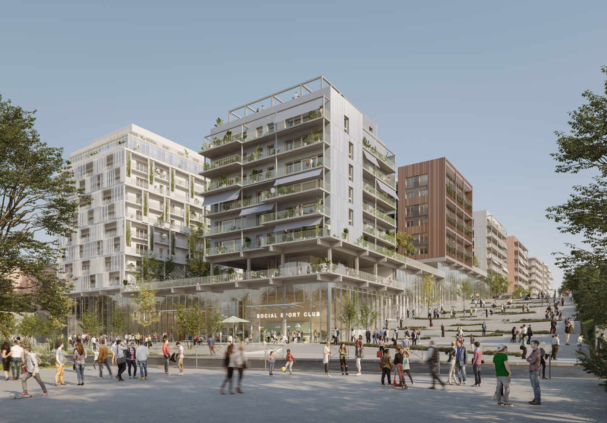
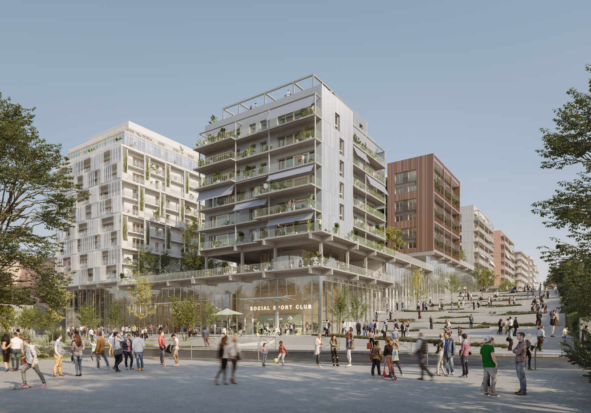

Paris 2024 : L'inspiration Olympique pour Los Angeles 2028
Avant gout des epreuves :
L’escalade, un sport qui fait appel à la fois à la force physique, à la concentration mentale et à la précision, a rapidement gagné en popularité ces dernières années. Le Comite Olympique a donc décide de maintenir cette discipline dans les JO de Paris 2024. Le Complexe Sportif du Bourget, spécialement aménagé pour l’évènement, sera le théâtre des épreuves d’escalade.
Avant gout des infrastructures :
Depuis son inauguration, le Grand Stade de France a été le théâtre de moments inoubliables. Il est non seulement un lieu de compétition, mais aussi un symbole de l’excellence sportive française et internationale.